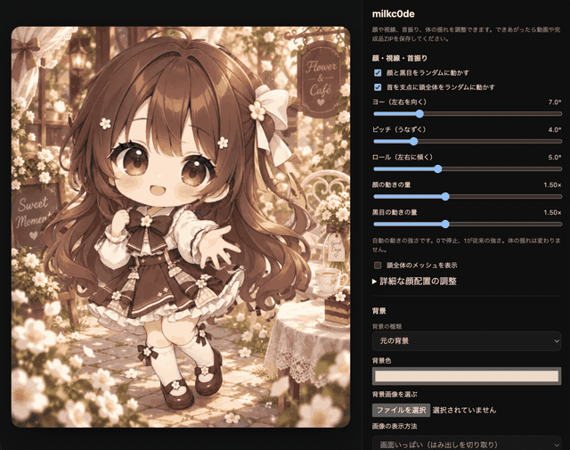
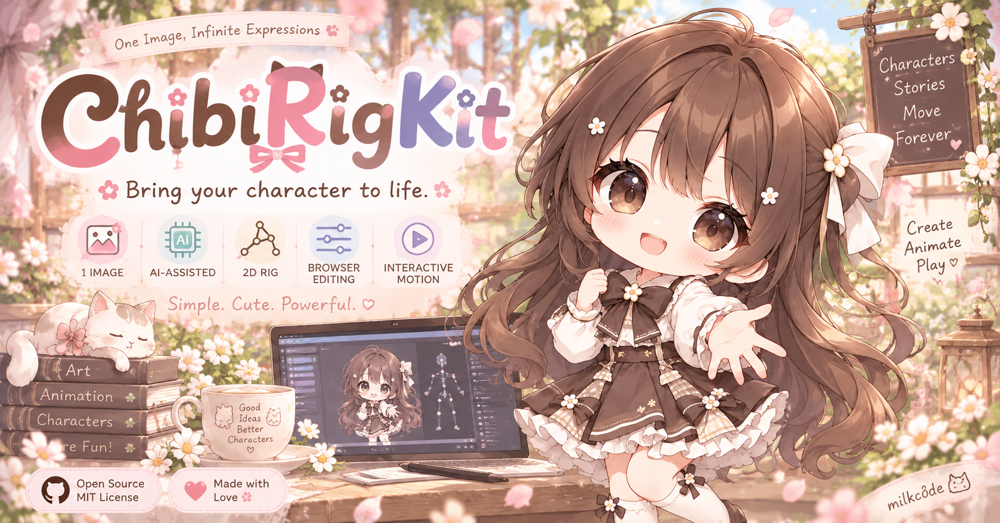

どの向きも、その子らしく。
正面と8方向の配置をブレンド。輪郭、目と口の位置、見かけの大きさまで、絵に合わせて整えます。長い髪には自然な揺れも。
9 directions · editable meshLIVE PLAYGROUND · TRY IT HERE
実際のChibiRigKit Playerを、そのままこのページに読み込んでいます。動きの調整やモーション再生を試せます。カメラ・マイクは自分で「追従開始」を押すまで起動しません。
A LITTLE MOTION, A LOT OF CHARACTER.
1枚のイラストから、カメラや声で動くキャラクターへ。
AIで動きの土台をつくり、ブラウザで自分好みに調整。
OBSにつないで、あなたらしい配信を。
完成品はインターネット接続不要。
ダウンロードしたHTMLで、再生・調整・動画保存までオフラインで使えます。
初回セットアップとCodexによる制作には接続が必要です。カメラ・マイクは追跡モデルを準備済みなら、ローカル起動でオフライン利用できます。

LITTLE DETAILS, FULL OF LIFE
絵の魅力を残したまま、動きを足していく。
つくった後も、自分の手で細かく調整できます。
正面と8方向の配置をブレンド。輪郭、目と口の位置、見かけの大きさまで、絵に合わせて整えます。長い髪には自然な揺れも。
9 directions · editable meshカメラで顔の向きや表情を、マイクで口パクを。目・口・頭の追従を選んで、モーションファイルの動きと組み合わせられます。
camera + voice · local processing動きを録画して、保存・再生。首の3軸は倍率を個別に調整できます。WebM動画や、画像を内蔵したHTML・ZIPで持ち出すことも。
motion · WebM · HTML / ZIPONE PC, LIVE IN SYNC
背景や動きの調整も、モーション再生も。
カメラ・音声の追従も、リアルタイムに反映します。
背景・顔の配置・動きの倍率を調整。モーションを再生し、カメラや声でキャラクターを動かします。
http://127.0.0.1:5510/ローカルサーバーが最新の状態を保持。SSEで変更を届け、OBSを後から開いても反映します。
Server-Sent Events · in memoryOBSのブラウザソースにURLを指定。操作パネルを出さず、指定した出力範囲を表示できます。
http://127.0.0.1:5510/obsインターネットへの公開も、外部サーバーも不要。 同じPC内の通信だけで動き、同じWi-Fiの別の端末からもアクセスできません。共有するのは設定と動きの数値。生のカメラ映像・音声・機器名・デバイスIDは送りません。
ChibiRigKitの「背景の種類」を「単色」にし、背景色を緑の RGB 0, 255, 0（#00FF00） にします。OBSで対象のブラウザソースを右クリック →「フィルタ」→ エフェクトフィルタの「＋」→「クロマキー」を追加。色キーの種類は初期設定の「緑」のままで、通常は数値を調整せずに緑背景を透過できます。輪郭の見え方に合わせて、必要な場合だけ微調整してください。
余白は、同じフィルタ画面で「クロップ／パッド」を追加して調整できます。「相対」にチェックを入れたまま、左・上・右・下に正の値を入れると余白を切り取り、負の値を入れると余白を追加できます。
OBS公式の説明：クロマキー ↗・クロップ／パッド ↗
SSE（Server-Sent Events）は、サーバーから表示側へ更新を継続して届けるしくみです。操作画面から届いた設定や追従値をサーバーのメモリに置き、OBS側は受け取った値でキャラクターを描画します。映像そのものを転送する方式ではありません。サーバーを終了すると共有状態は消えます。
完成品ZIPを展開し、Windowsは START_SERVER.cmd、Macは START_SERVER.command、Linuxは sh START_SERVER.sh で起動します。Python 3が必要ですが、追加パッケージは不要です。完成品にはカメラ追跡ファイルも同梱します。SDK・モデルが不足している場合は「追従開始」でダウンロードします（取得時だけインターネット接続が必要です）。準備後はカメラ・音声もオフラインで使えます。ChibiRigKitを npm run player で起動する方法もあり、同じ操作用・OBS用URLを使えます。
OBSでは「ブラウザ」ソースの「ローカルファイル」をオフにして、表示専用URLを指定します。追従中は操作画面を開いたままにしてください。OSの休止やブラウザのページ凍結中は、新しい追従値を取得できません。OBSの録画・配信が自動で始まることはありません。
使い方を詳しく見るYOUR CHARACTER, YOUR SPACE
顔の追跡と音声の解析はローカル処理。カメラ・マイクは開始ボタンを押したときだけ使います。
モーションファイルに残るのは動きの数値。生映像や生音声は保存しません。
LET'S MAKE SOMETHING MOVE
制作にはCodex。再生と調整はブラウザで。
サンプルの再生から、気軽に始められます。
GitHubからダウンロード、またはgit clone。サンプル再生にはNode.js 22以上を用意します。
初回のセットアップ後、npm run player。ターミナルに表示されたURLを開けば準備完了です。
git clone https://github.com/milkc0de/ChibiRigKit.git
cd ChibiRigKit
npm run player:setup
npm run playerカメラ・マイクは、開いただけでは起動しません。
MADE TO BE YOURS
完成品の再生・調整・動画保存はオフラインで。初回セットアップとAIによる制作にはインターネット接続が必要です。
GitHubでプロジェクトを見る